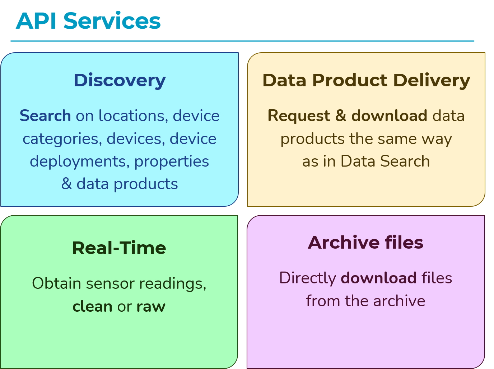
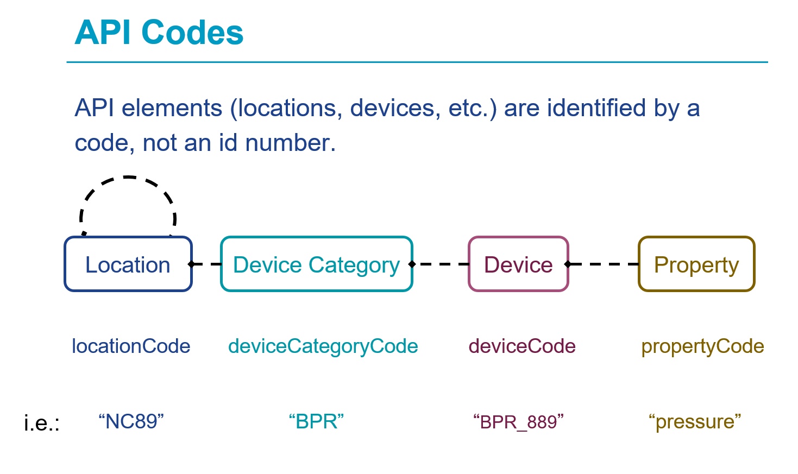
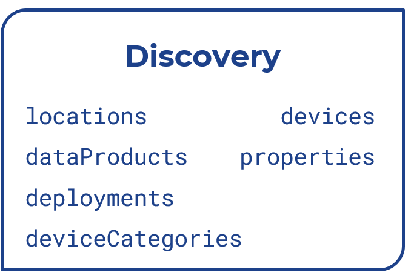
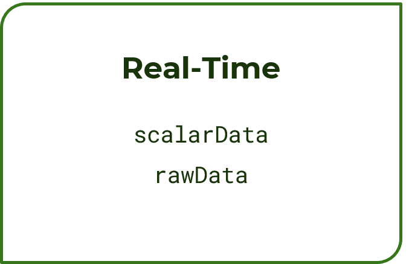
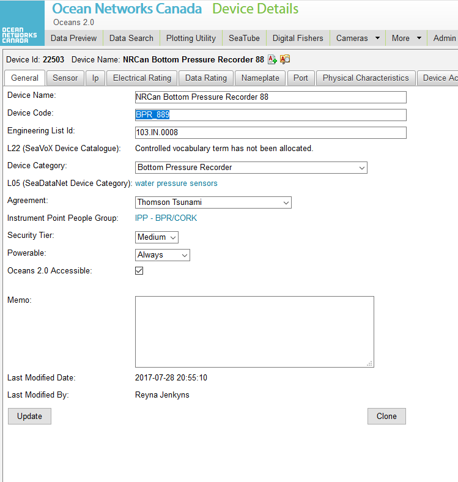
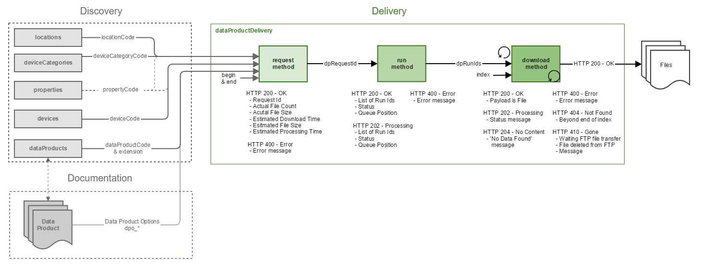

Oceans 3.0 API tutorial
Before we begin:
You’ll need an Oceans 3.0 account to get a token.
How to get a token?
Register for an Oceans 3.0 account at https://data.oceannetworks.ca/Registration.
Log into your account at https://data.oceannetworks.ca by clicking the Log In link.
Click the Profile link (top right corner) to access your account profile.
Access the Web Services API tab and click Copy Token.
If you forget your token, you can always find it in your Oceans 3.0 account profile.
There are two ways to make an HTTP GET request:
With token in the url: https://data.oceannetworks.ca/api/locations?&locationCode=NC89&token=YOUR_TOKEN.
Without token in the url: https://data.oceannetworks.ca/apiproxy/locations?locationCode=NC89. Calls made this way do not require a token and use the Oceans 3.0 login instead.
This tutorial will use the second method for demonstration purposes and to not expose the token. When developing your own scripts, please follow the first method.
Introduction to ONC Web Services/API
What are ONC Web Services?
A group of public web services that can be used to explore and download ONC data.
Documentation page
https://wiki.oceannetworks.ca/display/O2A/Oceans+3.0+API+Home
https://data.oceannetworks.ca/OpenAPI


A practical user case

Step 1: Find information about a location
Query the Locations Discovery Service.
The primary purpose of the locations discovery service is to query locations in ONCs database that have instruments data you are interested. For these queries you need to use the parameter locationCode when requesting data or information with the different available services.
Check the API documentation and also the OpenAPI page for more information.
Here are some web services examples for how to use the location discovery services.
Return all available locations: https://data.oceannetworks.ca/apiproxy/locations
Return a specific location by using the locationCode parameter (Clayoquot Slope Bullseye - locationCode: NC89): https://data.oceannetworks.ca/apiproxy/locations?locationCode=NC89
You probably get something like this after running the second example:
Hint
It is recommended that you install a JSON converter extension in your browser if not default as this helps with readability.
[
{
"deployments": 38,
"locationName": "Bullseye",
"depth": 1256.863158,
"bbox": {
"maxDepth": 1260.0,
"maxLat": 48.671024,
"maxLon": -126.847007,
"minDepth": 1253.0,
"minLat": 48.669268,
"minLon": -126.85184
},
"description": " Bullseye is a location at Clayoquot Slope, where gas hydrates, seafloor cold seeps, and hydrate dynamics are observed.",
"hasDeviceData": "true",
"lon": -126.848028,
"locationCode": "NC89",
"hasPropertyData": "false",
"lat": 48.670589,
"dataSearchURL": "https://data.oceannetworks.ca/DataSearch?location=NC89"
}
]
Step 2: Find information about devices/instruments at a given location
Query the Device Categories Discovery Service.
Check the API documentation and OpenAPI page for more information.
Here are some web services examples for how to use the device categories discovery service.
Return all devices installed at NC89 (Clayoquot Slope - Bullseye): https://data.oceannetworks.ca/apiproxy/deviceCategories?locationCode=NC89
Return all devices that have a specific property (e.g. “Pressure”) https://data.oceannetworks.ca/apiproxy/deviceCategories?deviceCategoryName=pressure
After running the second example, we can find one instrument: Bottom-Pressure Recorder -> deviceCategoryCode=BPR.
Step 3: Find all deployments of a Bottom-Pressure Recorder at NC89.
Query the Deployments Discovery Service:
Check the API documentation and OpenAPI page for more information.
After running https://data.oceannetworks.ca/apiproxy/deployments?locationCode=NC89&deviceCategoryCode=BPR, the following will be returned:
[
{
"begin": "2009-09-06T15:05:58.000Z",
"depth": 1258.0,
"deviceCategoryCode": "BPR",
"deviceCode": "BPR_889",
"end": "2022-08-04T19:16:37.000Z",
"hasDeviceData": true,
"heading": null,
"lat": 48.670835,
"locationCode": "NC89",
"lon": -126.847965,
"pitch": null,
"roll": null
},
{
"begin": "2022-08-04T23:38:03.000Z",
"depth": 1257.0,
"deviceCategoryCode": "BPR",
"deviceCode": "RBRQUARTZ3BPR203659",
"end": null,
"hasDeviceData": true,
"heading": null,
"lat": 48.670826,
"locationCode": "NC89",
"lon": -126.847987,
"pitch": null,
"roll": null
}
]

Step 4: Get raw archived instrument data for the BPR at NC89 for a given time-range
Query the Rawdata Service:
Check the API documentation and OpenAPI page for more information.
There are two methods to get rawdata:
by location
that requires:
locationCode
deviceCategoryCode
{
"data": {
"lineTypes": [" ", " ", " ", " ", " "],
"readings": [
"3C5496E288C0BA7A759558AE00",
"3C5496E388C0BAA275955B4700",
"3C5496E488C0BB3975955B1600",
"3C5496E588C0BA127595592A00",
"3C5496E688C0BA96759559B400"
],
"times": [
"2020-01-28T00:00:00.493Z",
"2020-01-28T00:00:01.495Z",
"2020-01-28T00:00:02.494Z",
"2020-01-28T00:00:03.496Z",
"2020-01-28T00:00:04.494Z"
]
},
"metadata": { "locationName": "Bullseye" },
"next": null,
"outputFormat": "array",
"queryUrl": "https://data.oceannetworks.ca/api/rawdata/location?locationCode=NC89&deviceCategoryCode=BPR&dateFrom=2020-01-28T00:00:00.000Z&dateTo=2020-01-28T00:00:05.000Z"
}
by device
that requires:
deviceCode
{
"data": {
"lineTypes": [" ", " ", " ", " ", " "],
"readings": [
"3C5496E288C0BA7A759558AE00",
"3C5496E388C0BAA275955B4700",
"3C5496E488C0BB3975955B1600",
"3C5496E588C0BA127595592A00",
"3C5496E688C0BA96759559B400"
],
"times": [
"2020-01-28T00:00:00.493Z",
"2020-01-28T00:00:01.495Z",
"2020-01-28T00:00:02.494Z",
"2020-01-28T00:00:03.496Z",
"2020-01-28T00:00:04.494Z"
]
},
"next": null,
"outputFormat": "array",
"queryUrl": "https://data.oceannetworks.ca/api/rawdata/device?deviceCode=BPR_889&dateFrom=2020-01-28T00:00:00.000Z&dateTo=2020-01-28T00:00:05.000Z"
}
How to find the deviceCode?
The second method requires deviceCode. Given that we know deviceCategory (BPR) and location (NC89), there are two ways to find the related deviceCode:
By going to Device Details in Oceans 3.0 portal.
This page can be accessed by clicking details under devices in the pop-up window in Data Search.

By using the Device Discovery Services.
[
{
"cvTerm": {
"device": [
{
"uri": "http://vocab.nerc.ac.uk/collection/L22/current/TOOL1652/",
"vocabulary": "SeaVoX Device Catalogue"
}
]
},
"dataRating": [
{
"dateFrom": "2018-04-25T09:21:06.000Z",
"dateTo": null,
"samplePeriod": 1.0,
"sampleSize": 1
}
],
"deviceCategoryCode": "BPR",
"deviceCode": "BPR_889",
"deviceId": 22503,
"deviceLink": "https://data.oceannetworks.ca/DeviceListing?DeviceId=22503",
"deviceName": "NRCan Bottom Pressure Recorder 88",
"hasDeviceData": true
}
]
Step 5: Get archived scalar data for the BPR at NC89 for a given time-range
Query the Scalardata Service.
Check the API documentation and OpenAPI page for more information.
Again there are two methods to get scalar data:
by location (locationCode + deviceCategoryCode)
by device (deviceCode)
Let’s use location (locationCode and deviceCategoryCode) as an example.
Request all sensor data for a BPR at location NC89 (Bullseye) for the time range of five seconds on January, 28th 2021 after midnight:
The query returns more than one sensor: Now we narrow down our search by only querying the sensor dart_pressure_residual.
{
"messages": [],
"next": null,
"parameters": {}, // not shown
"queryUrl": "https://data.oceannetworks.ca/api/scalardata/location?locationCode=NC89&deviceCategoryCode=BPR&dateFrom=2021-01-28T00:00:00.000Z&dateTo=2021-01-28T00:00:05.000Z&sensorCategoryCodes=dart_pressure_residual",
"sensorData": [
{
"actualSamples": 5,
"data": {
"qaqcFlags": [1, 1, 1, 1, 1],
"sampleTimes": [
"2021-01-28T00:00:00.227Z",
"2021-01-28T00:00:01.229Z",
"2021-01-28T00:00:02.230Z",
"2021-01-28T00:00:03.230Z",
"2021-01-28T00:00:04.229Z"
],
"values": [
-0.005514044963092601, -0.00482414655402863, -0.003632743404523353,
-0.005756540188485815, -0.00605069544167236
]
},
"outputFormat": "array",
"sensorCategoryCode": "dart_pressure_residual",
"sensorCode": "dart_pressure_residual",
"sensorName": "DART Pressure Residual",
"unitOfMeasure": "decibar"
}
]
}


Some important information before we go into Data Product Delivery Service:
Consider using archivefile service
Most data files can be downloaded using the archivefiles services (OpenAPI page). Some data examples include .txt, .fft, .wav, .mp3, .mp4, .flac, .rdi, etc. That will be lighter on our servers and get the data faster and easier for you!
Downloading a data product is a three-step process:
Request a data product generation/compilation using the request method.
Validates request parameters, creates a new request definition, and provides performance estimates.
What: device category and/or property.
Where: location or device.
When: dateFrom and dateTo date/time.
How: data product, extension, and data product options.
Run the data product request using the run method.
Starts the data product generation/compilation process by adding the request to the internal Task Queue.
Download the data product using the download method.
Attempts to download a data product file at an index. If the file at that index is not ready for download at the time of the download request, the service returns information about the status of the process. The client application must continue refreshing the download request until the file is ready, or an error message is returned.
Step 6: Request an image file download for a daily plot of BPR data from NC89
Query the Data Product Delivery Service.
Check the API documentation and OpenAPI page for more information.
Request the download of the data product: Time-series Scalar Data Plot (TSSP) with extension png
Copy the dpRequestId when completed into the next method step.
Request the status of the product (optional step)
https://data.oceannetworks.ca/apiproxy/dataProductDelivery/status?dpRequestId=[YOUR_REQUEST_ID_HERE]
Run the Request job of the data product generation.
https://data.oceannetworks.ca/apiproxy/dataProductDelivery/run?dpRequestId=[YOUR_REQUEST_ID_HERE]
Note
Refresh the browser until you see status: "complete".
Copy the dpRunId when completed into the next method step.
Download the generate data product (run).
The file will be downloaded automatically into your download folder setup via your browser.
Download the metadata file only (optional step).